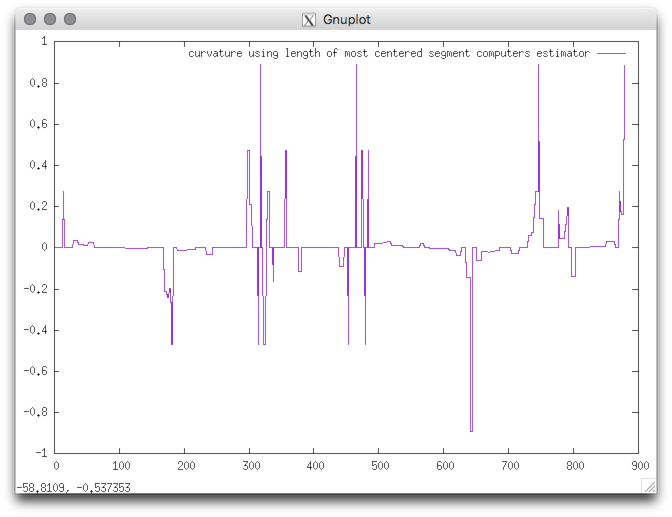

|
DGtalTools
0.9.2
|
Estimates curvature using length of most centered segment computers.
Usage: curvatureMCMS [options] –input <fileName>
Allowed options are :
Example: We consider as input shape the freeman chain of the DGtal/examples/sample directory. The contour can be displayed with displayContours :
The curvature can be computed as follows:
You should obtain such a result:
| contour | curvature |
|---|---|

|

|
| CCW oriented (index 0=blue pt) | resulting curvature |
 1.8.11
1.8.11